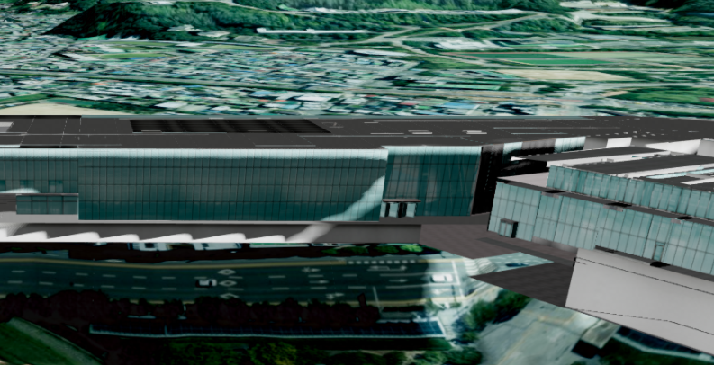
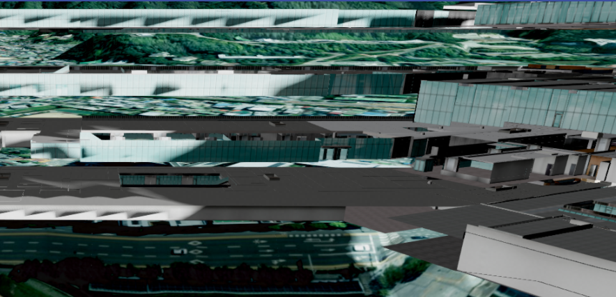

1. 실내 (3ds) 모델 레이어 시작하기
* 실내 (3ds) 모델 레이어는 .3ds (3D Studio) 형식의 3D 모델을 불러와 지도 위에 출력하는 레이어입니다.
* 클래스 이름의 TDS 는 곧 3DS 를 뜻합니다. (식별자는 숫자로 시작할 수 없어 3ds → Tds 로 표기)
* 주로 실내 건물 데이터를 다루는 데 사용하며, 모델을 사용자가 원하는 단위로 그룹화하거나 층별로 분리해서 볼 수 있는 것이 특징입니다.
* 레이어는 app.createModelTdsLayer(opt) 함수로 생성합니다.
* 클래스 이름의 TDS 는 곧 3DS 를 뜻합니다. (식별자는 숫자로 시작할 수 없어 3ds → Tds 로 표기)
* 주로 실내 건물 데이터를 다루는 데 사용하며, 모델을 사용자가 원하는 단위로 그룹화하거나 층별로 분리해서 볼 수 있는 것이 특징입니다.
* 레이어는 app.createModelTdsLayer(opt) 함수로 생성합니다.
app.createModelTdsLayer(opt);
opt.name
string : 레이어 이름 *필수 입력
opt.baseurl string : .3ds 데이터가 있는 기본 URL *필수 입력
opt.xmlurl string : 모델 파일 목록과 위치 범위(BoundingBox)가 담긴 메타데이터(XML) URL
opt.ext string : 파일 확장자. 기본값 '3ds'
opt.containMetaData boolean : metaData.json 형식의 메타데이터 사용 여부. 기본값 false
opt.position object : 모델의 위치 {x, y, z}
opt.scale object : 모델의 크기(스케일) {x, y, z}. 기본값 {1, 1, 1}
opt.rotation object : 모델의 회전 {x, y, z}
opt.animationspeed number : 애니메이션 재생 속도. 기본값 1
opt.baseurl string : .3ds 데이터가 있는 기본 URL *필수 입력
opt.xmlurl string : 모델 파일 목록과 위치 범위(BoundingBox)가 담긴 메타데이터(XML) URL
opt.ext string : 파일 확장자. 기본값 '3ds'
opt.containMetaData boolean : metaData.json 형식의 메타데이터 사용 여부. 기본값 false
opt.position object : 모델의 위치 {x, y, z}
opt.scale object : 모델의 크기(스케일) {x, y, z}. 기본값 {1, 1, 1}
opt.rotation object : 모델의 회전 {x, y, z}
opt.animationspeed number : 애니메이션 재생 속도. 기본값 1
* 생성한 레이어는 .ready().then() 안에서 app.showLayer(name, true) 로 가시화합니다.
* 그룹화·이동 기능을 쓰려면, 로딩이 끝난 뒤 setGroupOriginPosition() 으로 각 모델의 원래 위치를 먼저 저장해 두어야 합니다. (나중에 원위치로 되돌릴 때 기준이 됩니다.)
* 그룹화·이동 기능을 쓰려면, 로딩이 끝난 뒤 setGroupOriginPosition() 으로 각 모델의 원래 위치를 먼저 저장해 두어야 합니다. (나중에 원위치로 되돌릴 때 기준이 됩니다.)
const opt = {
name: 'indoor', // 레이어 이름 *필수
baseurl: 'https://.../indoor/', // .3ds 데이터 기본 URL *필수
xmlurl: 'https://.../indoor/meta.xml', // 모델 파일 목록·위치가 담긴 XML
ext: '3ds', // 파일 확장자
};
const layer = app.createModelTdsLayer(opt);
// 로딩이 끝난 후 실행
layer.ready.then((tds) => {
app.fitLayerExtent('indoor'); // 레이어로 카메라 이동
app.showLayer('indoor', true); // 레이어 가시화
layer.setGroupOriginPosition(); // 그룹/이동 기능을 위한 원위치 저장
});
2. 사용자 지정 그룹 만들기
* 여러 개의 mesh를 하나의 묶음(그룹)으로 만들어 함께 제어할 수 있습니다. (예: 특정 방, 특정 설비끼리 묶기)
* setSelectGrouping 은 선택한 mesh들의 배열과 그룹 이름을 받아 사용자 지정 그룹을 만듭니다.
* setSelectGrouping 은 선택한 mesh들의 배열과 그룹 이름을 받아 사용자 지정 그룹을 만듭니다.
U3dModelTdsLayer.setSelectGrouping (meshList, groupName)
meshList
Array : 그룹으로 묶을 mesh들의 배열 *필수 입력
groupName string : 새로 만들 그룹의 이름 *필수 입력
return UGroup : 생성된 사용자 지정 그룹
groupName string : 새로 만들 그룹의 이름 *필수 입력
return UGroup : 생성된 사용자 지정 그룹
// meshList : 사용자가 선택한 mesh들의 배열
const userGroup = layer.setSelectGrouping(meshList, 'room1');
console.log(userGroup.name); // 'room1'
* getAllUserGroupList() 은 지금까지 만들어진 모든 사용자 지정 그룹을 배열로 돌려줍니다.
* getUserGroupList(groupName) 은 이름으로 특정 그룹에 속한 mesh들을 배열로 돌려줍니다.
* getUserGroupList(groupName) 은 이름으로 특정 그룹에 속한 mesh들을 배열로 돌려줍니다.
U3dModelTdsLayer.getUserGroupList (groupName)
groupName
string : 찾을 사용자 지정 그룹의 이름
return Array : 해당 그룹에 속한 mesh 배열
return Array : 해당 그룹에 속한 mesh 배열
const allGroups = layer.getAllUserGroupList(); // 전체 그룹 목록
for (const group of allGroups) {
console.log(group.name);
}
const room1Meshes = layer.getUserGroupList('room1'); // 'room1' 그룹에 속한 mesh 배열
3. 층으로 나누어 보기
* setFloorFromGroupName 은 파일에 들어 있는 mesh 이름 규칙을 이용해 자동으로 층을 나누는 함수입니다.
* 파일 제작 시 그룹 이름에 층 정보가 들어 있을 때(예: AC_AB04_FC (4층), CC_AB03_FC (3층)) 편리하게 사용할 수 있습니다.
* 층 사이 간격(height)을 주면 각 층이 위로 벌어져 건물을 분해한 것처럼 볼 수 있습니다.
* 반환된 층 그룹은 addUserGroup 으로 레이어에 등록해야 이후 그룹 이동(4번 항목) 기능의 대상이 됩니다.
* 파일 제작 시 그룹 이름에 층 정보가 들어 있을 때(예: AC_AB04_FC (4층), CC_AB03_FC (3층)) 편리하게 사용할 수 있습니다.
* 층 사이 간격(height)을 주면 각 층이 위로 벌어져 건물을 분해한 것처럼 볼 수 있습니다.
* 반환된 층 그룹은 addUserGroup 으로 레이어에 등록해야 이후 그룹 이동(4번 항목) 기능의 대상이 됩니다.
U3dModelTdsLayer.setFloorFromGroupName (floorCount, height, commonName, commonChar)
floorCount
number : 건물의 총 층수 *필수 입력
height number : 층과 층 사이를 벌릴 간격(m). 0이면 벌어지지 않음
commonName string : 만들어질 그룹 이름에 붙는 접미사. '층' → '1층', '2층' ...
commonChar string : 이름에서 층을 구분하는 공통 문자. 기본값 '0'
return Array : 층별로 만들어진 사용자 지정 그룹 목록
height number : 층과 층 사이를 벌릴 간격(m). 0이면 벌어지지 않음
commonName string : 만들어질 그룹 이름에 붙는 접미사. '층' → '1층', '2층' ...
commonChar string : 이름에서 층을 구분하는 공통 문자. 기본값 '0'
return Array : 층별로 만들어진 사용자 지정 그룹 목록
U3dModelTdsLayer.addUserGroup (group)
group
UGroup : 레이어에 등록할 사용자 지정 그룹
// 총 4층 건물, 층 간격 3m, 그룹 이름은 '1층'~'4층'
const floorGroups = layer.setFloorFromGroupName(4, 3, '층', '0');
console.log(floorGroups.length); // 4
// 만들어진 층 그룹을 레이어에 등록 (그룹 이동 기능의 대상이 됨)
for (const group of floorGroups) {
layer.addUserGroup(group);
}


4. 그룹 이동 · 애니메이션
* moveUserGroupPosition 은 등록된 사용자 지정 그룹들을 일정한 간격으로 한꺼번에 이동시킵니다. 층 그룹에 적용하면 층이 서로 벌어지는 분해도가 됩니다.
U3dModelTdsLayer.moveUserGroupPosition (x, y, z)
x, y, z
number : 그룹 사이를 벌릴 간격. 각 축 방향, 기본값 0
layer.moveUserGroupPosition(0, 0, 5); // 그룹마다 z(높이) 방향으로 5m씩 벌림
layer.moveUserGroupPosition(0, 0, 0); // 0을 주면 원래 위치로 되돌아옴
* animateInterval 은 위 이동을 지정한 시간에 걸쳐 부드럽게(애니메이션) 보여줍니다.
* stopAnimation 은 진행 중인 애니메이션을 멈춥니다. 인자로 true 를 주면 멈춘 뒤 원위치로 되돌립니다.
* stopAnimation 은 진행 중인 애니메이션을 멈춥니다. 인자로 true 를 주면 멈춘 뒤 원위치로 되돌립니다.
U3dModelTdsLayer.animateInterval (interval, x, y, z)
interval
number : 이동이 완료되기까지의 시간을 정하는 값. 총 소요 시간 ≈ interval × 0.5초 입니다 (예: 4 → 약 2초, 10 → 약 5초) *필수 입력
x, y, z number : 그룹을 벌릴 목표 간격
x, y, z number : 그룹을 벌릴 목표 간격
U3dModelTdsLayer.stopAnimation (positionInit)
positionInit
boolean : true 이면 애니메이션 정지 후 원래 위치로 복귀
layer.animateInterval(4, 0, 0, 5); // 약 2초에 걸쳐 z 방향으로 5m씩 벌어지는 애니메이션
layer.stopAnimation(true); // 애니메이션 정지 + 원위치 복귀